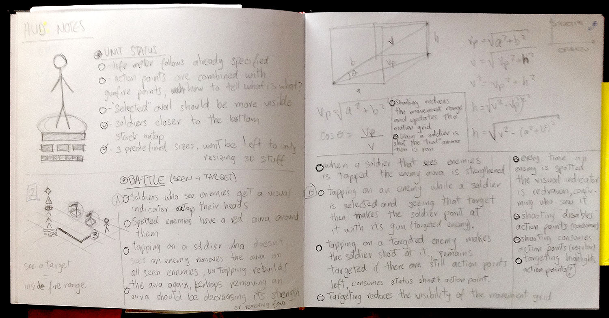

F2P Turn-based Mobile Strategy Game
Early UI design work
Wireframing, Interacion Design.
For this early stage of the F2P strategy game I had different roles: interaction designer, workshop facilitator, visual designer. This is an account of my design work in the game.
Initial analysis

Helped the game designer create a conceptual map so we both could have a better understanding of all the aspects that were influencing the game creation and were altering the game design.
UI Interaction
Designed the first approach to the game's initial screens and controls. This allowed to start proper talks about the mechanics and the interface with the game designer and about its implementation with the developers.


These wireframes include the basic UI controls for the game: Map buildings, Unit status, Resources, Shop access, Settings, Building Options, etc.


The Armory building interface included a list of Ammo clips to be used by the player's units as well as the queue for ammo production; UI interaction was detailed for each UI option. It also specified how help would work for each screen.
This is the specification for the Barracks and how fitting units with military equipment from the warehouse would work.
Proposed Screenflow
Described the navigation and interfaces the player would go through while playing the game.

Player Troops UI
Had to make some research and note-taking about how to display action points and movement on a board for turn based games.

These notes ended up being a simple interaction specification and was later included in the document.

Devised a usage for color in the game, based in my own experience as an interaction designer for applications and as a strategy game player.

These color scheme was later used to support design decisions regarding what color to use, why and in which cases:
This specs show why using green and a faded green to display available and consumable action points, also black after they have been spent.

Specified how the unit life bar would change its color as it was being depleted, also the correct placement of the unit status bar.
Visual Design
Made in collaboration with another visual designer, had him create the basic assets and then I created the shape for all interface elements and screens:
Also dialog boxes, buttons, confirmations, shop layout, etc.
Here can be seen the early tests on an iPad: